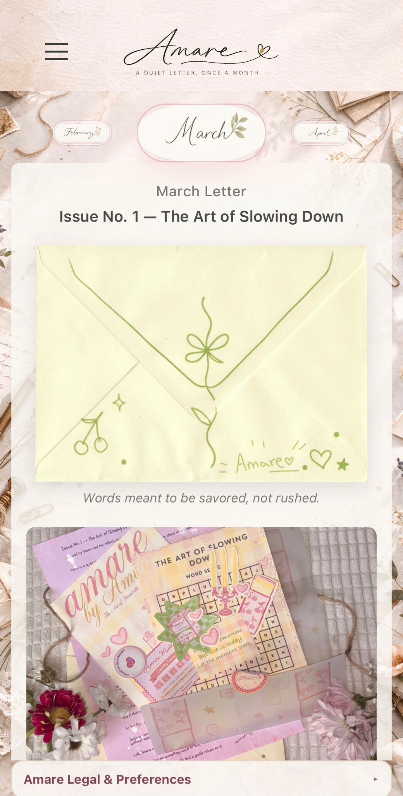

Project Overview
Amare was commissioned as a bespoke client platform to support a creative mail subscription concept. The goal was to build a site that could communicate the value of the subscription clearly while maintaining a soft, artistic visual language.
The project required a fully custom structure rather than a template-based solution, allowing the design and experience to be tailored specifically to the brand.
What brought the project to life
The client needed more than a simple landing page. The project required a digital presence that could explain the subscription clearly, feel aligned with the creative direction of the brand, and present the experience in a way that felt thoughtful rather than transactional.
That meant shaping the structure, content flow and visual treatment around the concept itself, so the website supported the tone of the brand instead of feeling like a generic template adapted after the fact.
What the client was really asking for
A refined client-facing platform that could carry the feeling of the brand, communicate the subscription offer properly, and give visitors confidence in the overall concept from the first impression onward.